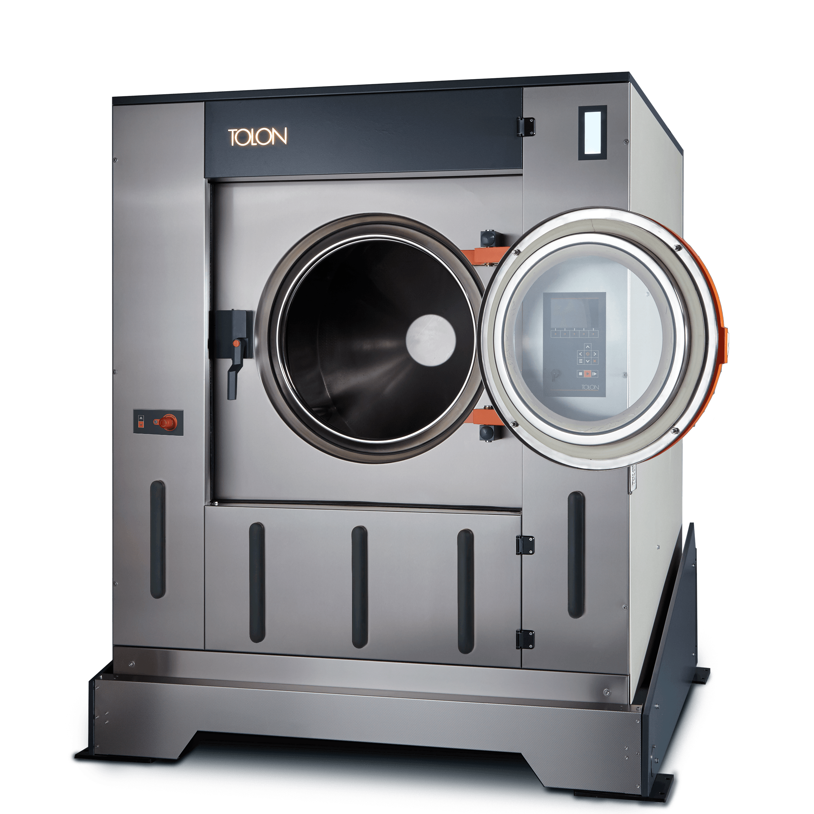
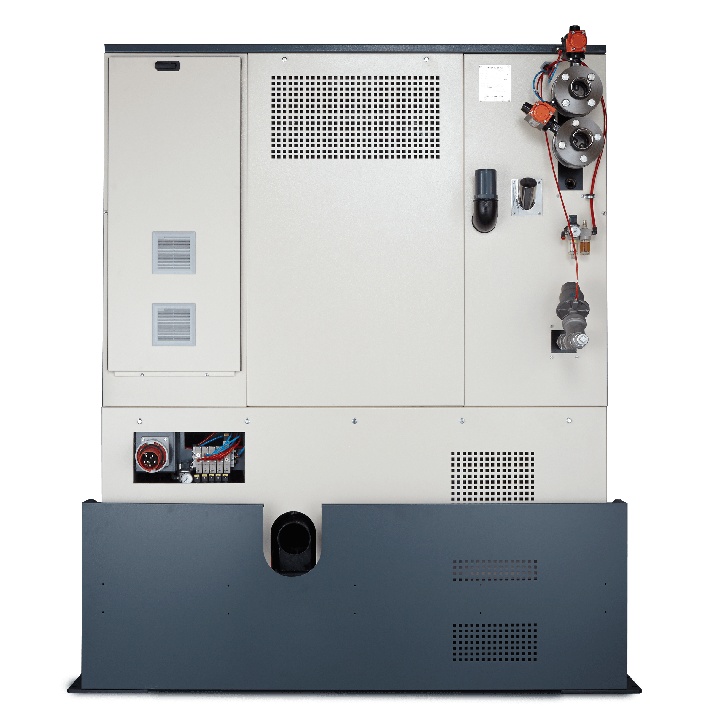
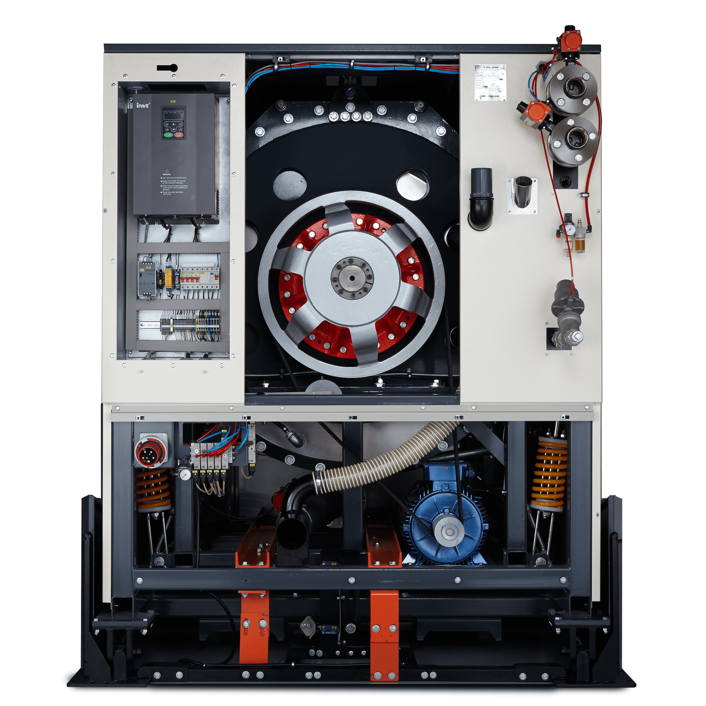
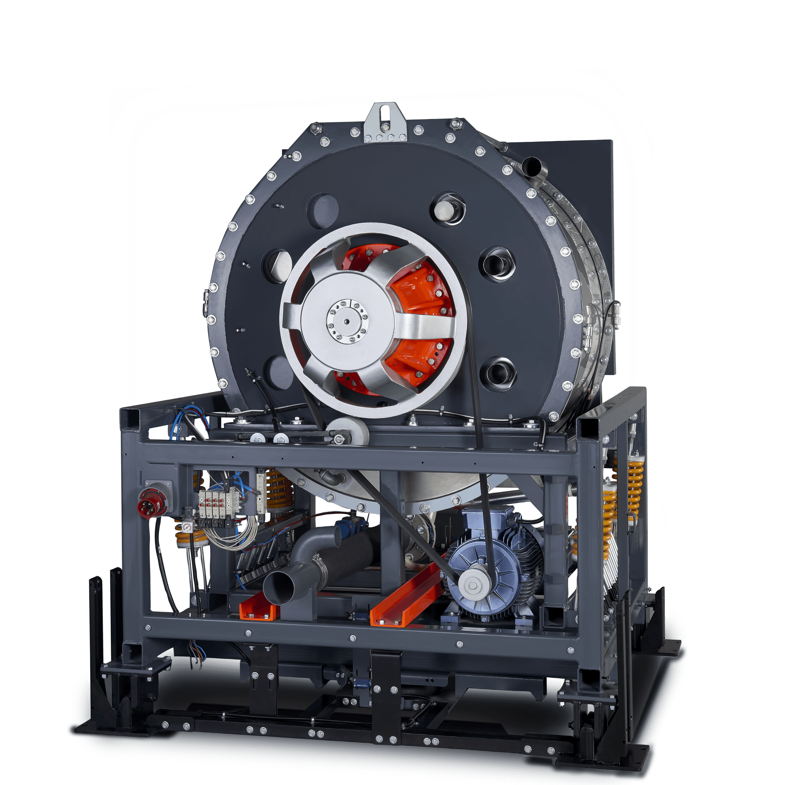

TWE XL serisi
Çamaşır yıkama makineleri

Ergonomik tasarım
Kolay, hızlı ve hatasız kullanım

Tek ekranda program özeti

Kapsamlı çalışma parametreleri

Soru-cevap programlama

Detaylı mimik diagramı

Açıklamalı parametre ayarları

Dahili diagnostik sistemi

Alarm istatistikleri

Resimli sorun giderme kılavuzu

Veritabanı yedekleme

CSV formatında program aktarımı

USB girişinden kolay yazılım güncelleme

Çok kullanıcılı erişim kontrolü

Çoklu dil desteği

Yazılım üzerinden harici dozajlama ünitesi kontrölü

Kapsamlı tüketim verileri
Durum ışığı
Makinenin durumu
her yerden görülebilir

Otomatik kilit
Güvenli kullanım
Konik tambur ağzı
Kolay boşaltma
Koruyucu tamponlar
Uzun ömür

12° eğilme
Zahmetsiz boşaltma
Bağımsız devirme
kumanda paneli
Güvenli ve pratik
Hava yastığı
Hidrolik sistem gerektirmez

Menteşeli kapaklar
Kolay servis erişimi

Yalın konstrüksiyon
Kolay ve hızlı bakım
Kataforez boya
Yüksek korozyon direnci

Yüksek kapasite girişler
Hızlı su alımı ve ısıtma
Dozajlama girişi
Otomasyona hazır
Geniş tahliye çıkışı
Hızlı boşaltma

Yalın elektrik panosu
Kolay bakım

Kapalı rulman yatağı
Bakım gerektirmez, kolay sökülür
Seramik kaplı mil,
Teflon™ keçe
Uzun ömürlü, aşınmaz